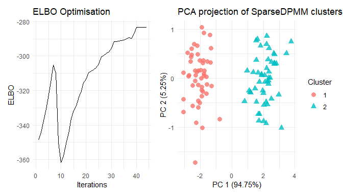

The goal of vimixr is to perform collapsed Variational Inference for DPMM using adaptive inference on the DP concentration parameter as well as covariance hyper-parameter of DP base distribution.
Installation
You can install the development version of vimixr from GitHub with:
# install.packages("devtools")
devtools::install_github("annesh07/vimixr")Example
Let’s generate some toy data. Here the data contains N = 100 samples, D = 2 dimensions and K = 2 clusters.
In order to obtain the clusters present in X, we apply function from vimixr package that corresponds to a simple case with cluster-inspecific fixed diagonal covariance for the data.
# Fixed-diagonal variance
res <- cvi_npmm(X, variational_params = 20, prior_shape_alpha = 0.001,
prior_rate_alpha = 0.001, post_shape_alpha = 0.001,
post_rate_alpha = 0.001, prior_mean_eta = matrix(0, 1, ncol(X)),
post_mean_eta = matrix(0.001, 20, ncol(X)),
log_prob_matrix = t(apply(matrix(0.001, nrow(X), 20), 1,
function(x){x/sum(x)})), maxit = 1000,
fixed_variance = TRUE, covariance_type = "diagonal",
prior_precision_scalar_eta = 0.001,
post_precision_scalar_eta = matrix(0.001, 20, 1),
cov_data = diag(ncol(X)))
summary(res)
#> Length Class Mode
#> posterior 5 -none- list
#> optimisation 3 -none- list
#> PCA_viz 1 ggplot2::ggplot S4
#> ELBO_viz 1 ggplot2::ggplot S4
#> Seed_used 1 -none- character
plot(res)